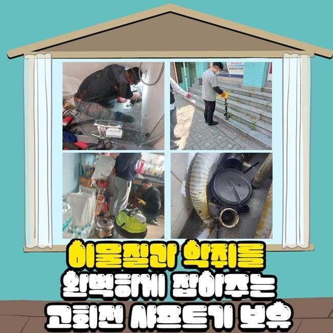
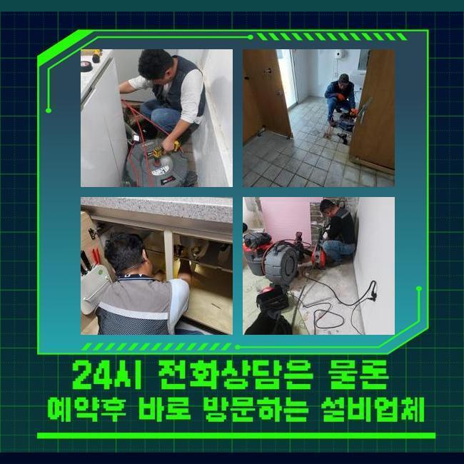
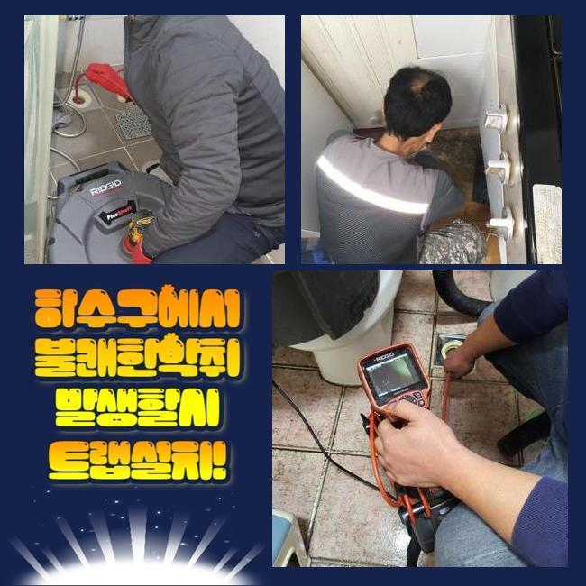
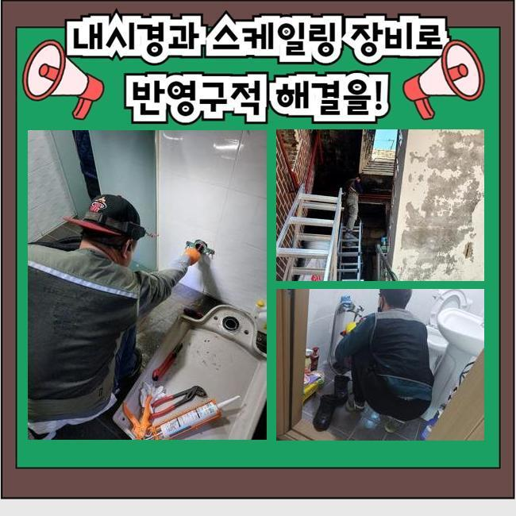
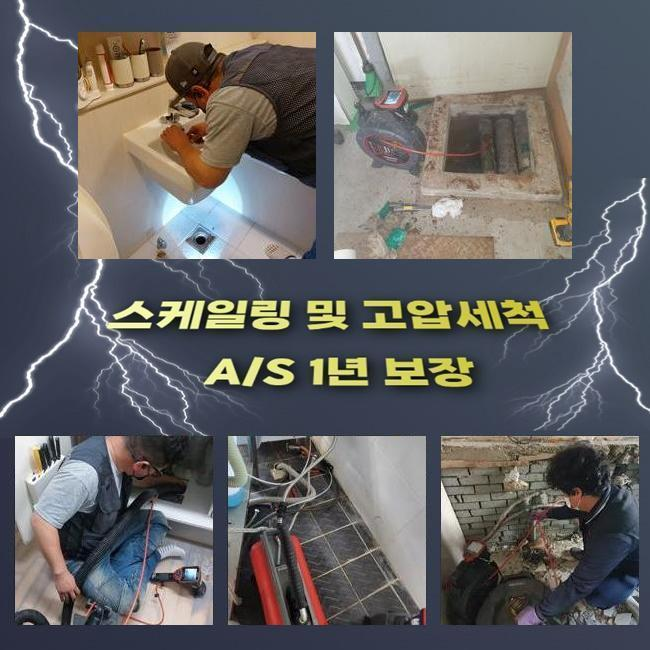
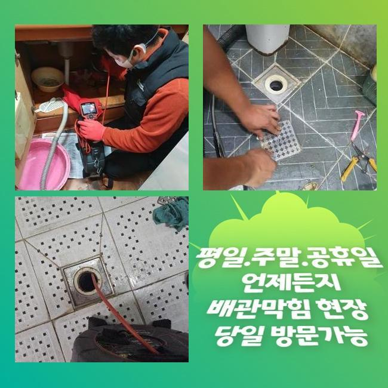
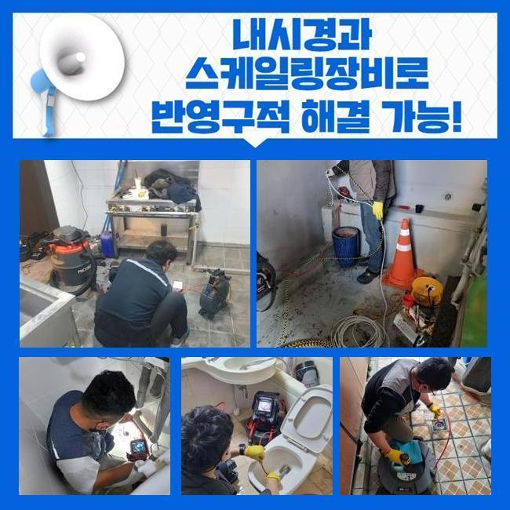

🏠 안양 석수동하수도뚫음 하수구청소장비 설비공사
안양 하수구막힘 전문 시공 후기

📋 작업 개요
- 위치: 안양
- 서비스 유형: 하수구막힘, 배관막힘, 누수수리, 역류해결, 뚫는업체, 배관청소, 고압세척, 설비공사, 배관보수, 악취차단
- 작업 일시: 2024. 11. 12. 9:50
- 업체명: 하수구수사대 (010-5615-2118)
🔍 문제 상황
안양 석수동하수도뚫음 하수구청소장비 설비공사
개수대나 화장실쪽에서 적절하게 물이 안빠지면 당혹스럽고 혼자서 해결이 안되는 문제이므로 기술자를 수소문하게 되겠죠
금번에는 그것과 연계된 하수관 수선 업무를 소개해드릴까해요
저희들이 방문드린 손님의 거주지는 3~4일 전 배관이 막혀버려서 일상에 트러블을 만들고 있는 상황이었어요
파이프가 막혀버리면 오수가 원활히 흘러나가지 못하여 불쾌한 상황이 발생하기 쉽고 더욱 곤란한 상황을 유발하기도 해요
따라서 발빠른 대처가 시급하고 트러블에 처하신 고객께선 적기에 기술적인 처치를 받아보실것을 권장해드려요
해당되는 고장을 처리하기 위하여 우선하여 알아보아야 되는 것은 배수와 관계된 시설물이죠
배수관 이용에 적합하지 않은 습관등을 갖고 계시다면 배수기능이 제대로 작동치 않을수도 있죠
그렇기에 정기적인 세척과 점검으로 사전에 대비하는 것이 좋습니다
시공중엔 내시경카메라를 활용해서 노폐물이 중점적으로 상존하는 지점을 꼼꼼히 살펴보고 소제를 시작합니다
시공히 똑바로 되기 위해선 정밀한 진단이 요청되기 때문이에요
이물들이 있던 곳에서는 화학제품을 넣어 안정적으로 없어지도록 세심히 업무를 실시했죠
세정을 하고 점차적으로 이물들은 빠졌지만 전체적 세척까지는 상당한 작업시간이 소요됐죠
기름슬러지와 석회물질 등을 소쇄하려 분쇄장비를 적용하기로 했어요

🔎 원인 분석
💡 전문가 진단: 정밀 진단 장비를 사용하여 슬러지의 고착 여부를 판명하고 타격/세척 작업을 실시했습니다.
기기 앞부분에 결속된 단단한 노커로 침전물을 파쇄하여 세척해나갈수 있어요
노폐물이 벽부위에 상당량 존재하여 샤프트 장비를 사용하여 초기작업을 계획했고 이때 석회물질들과 노폐물들을 없애나가려 계획했어요
방치해 버리면 막대한 고장이 촉발될수 있기에 발빠른 대처가 불가결하다는 말씀을 드렸습니다
해당 상황에서 시공할때는 이차고장이 안생기게 집중해야 됩니다
파이프에 타격이 가해지면 해당하는 지점으로 수돗물이 집약될수 있고 균열이 생기기도 해요
그렇기에 해당 기계를 가동할때는 능란한 기술수준이 요청됩니다
또 그런 상황엔 빠르게 문의를 해서 침전물이 쌓이지 않게끔 만드는게 중요하죠
물샘 여부를 알아보기 위해선 배수 속도를 확인한뒤 내시경설비로 파이프 안쪽부분을 살펴야 해요
또한 트러블이 탐지되었다면 적합한 보수 등의 민첩하게 해결을 실행해야 하죠
우리들은 이렇게 급작스럽게 나타나는 장애에 대처하는 의미로 연계된 기기들을 항시적으로 챙기고 다니죠
관에서 일어나는 잔류물의 상태를 진단하게 되면 관련없는 잔류물이 표출될때가 있는데요
많은 인원이 쓰는 장소라면 더 심각한 모습을 띠죠
이럴땐 관로에 하중이 가해져 물샘까지 나타날수 있기에 세심한 검사가 필요한 것입니다
내시경기기로 이물누적 구간을 검증하는 단계가 제외된다면 고장 원인을 찾아내지 못할수도 많은데요

🔧 작업 과정
배관카메라로 파이프 안쪽을 들여다보며 노폐물과 끈적해진 석회성분으로 배수공간이 정체되었다는 걸 진단내렸습니다
그대로 놔둔다면 찌꺼기들이 넘쳐버릴 상황이라 빠른 정리가 필수였습니다
관안은 많이 오손되어 있었으며 음식물 여러 이물질과 기름때가 쌓여 있었어요
이것들 때문에 수돗물이 정상적으로 흘러가지 못해 막힘상황이 일어난거죠
그러하기에 분쇄공정과 세척작업이 필수였습니다
누적된 찌꺼기들을 조사하기 위해서 배관카메라를 집어넣었고 그에 적법한 작업을 시작하였어요
통수 문제를 해소하려는 플랜을 짜고 작업을 실시했죠
그리고 결과적으로 파이프 통로를 순조롭게 확보할수 있었답니다
또 세척 업무간 발생하는 오염물질이 배수관으로 흘러들어 누설을 유발할수도 있어서 미리 사전에 대비하는 것이 좋습니다
이것을 예방하려면 수리할때 배수공을 차단해서 노폐물이 들어가지 않도록 주의해야 돼요
해당 대처를 바탕으로 안정적인 하수구 보존을 해나갈수 있답니다
관로 훼손을 고려해서 조심스런 파쇄과정을 거치면서 배관카메라를 활용하여 침전물이 모인 공간을 발견했어요
배관 밑부분엔 고착화된 석회성분이 존재했고 그것을 내팽개쳐버린다면 역류상황까지 표출될거란걸 알수 있었죠
저희는 조심히 이물들을 걷어내고 하수관을 정리하여 배수가 원활히 가동되게끔 조치하였습니다
이렇게 순차적인 정비공정으로 설비의 성능을 유지하려는 자세가 계속될 필요가 있죠
전반적인 세척을 바탕으로 문제들을 소멸시키고 차후 발생할수 있는 현상들도 예방할수 있는 상황이었어요
손님께선 본질을 알아내고 결론을 확보하는 절차들이 상당히 중요하단 걸 느꼈다고 하시네요
신속하게 공정을 진행하려면 스케일러를 활용해나가야 되죠
해당 기기가 없다면 이물을 확실하게 제거하기 힘들고 얼마뒤 또 막힐수가 있기 때문이에요
석션기계도 중대한 몫을 커버한다는 점을 알립니다
배관 고장은 일단 발생하면 더욱 커질수가 있습니다
그렇기 때문에 정례적인 세척과정을 통해서 문제점을 사전에 막고 발현된 막힘은 재빠르게 대응하여 해결수행해야 해요


✅ 작업 완료
그렇게하면 관로에서 발생한 불이익을 최소화할 수 있는데요
분리배출을 자주하고 근방을 깨끗하게 유지하시면 편안한 일상생활을 누리실수 있답니다
우리팀은 고객님의 요구에 따라 조속히 날을 정한다음 방문드리고 있는데요
배관이 무슨 연유로 고장났는지 따지지않고 수준높은 도구들과 오랜 경험을 통하여 시공을 해드린다는점을 강조합니다
갑작스럽게 관로에 장애가 발발했다면 편하게 의뢰 부탁드립니다
신속하게 정리해 드릴게요




⚠️ 베란다 누수 및 방수 관리 방법
- ✅ 비가 많이 올 때 창틀 주변이나 아래층 천장에 얼룩이 생기는지 정기적으로 확인해 보세요.
- ✅ 우수관 주변 실리콘 마감이 들뜨거나 깨진 틈새가 있는지 손상 여부를 수시로 체크하세요.
- ✅ 베란다 바닥 타일의 줄눈(메지)이 소실되면 그 틈으로 물이 침투하여 누수가 유발됩니다.
- ✅ 누수 의심 증상 발견 시 방치하면 아래층 손실이 커지므로 즉시 전문가의 진단을 받으십시오.
💡 핵심 정리
- 확실한 장비 작업(내시경 점검 및 샤프트 스케일링)으로 원인을 뿌리 뽑습니다.
- 작업 후 1년 이내에 동일한 부위 재발 시 100% 무상 A/S 서비스를 보장합니다.
- 서울 · 경기 · 인천 전 지역에 24시간 언제든 긴급 출동할 수 있도록 항시 대기 중입니다.
❓ 자주 묻는 질문 (FAQ)
🚨 안양 하수구막힘 문제로 고민이신가요?
정확한 원인 진단과 확실한 시공으로 재발 없는 해결을 약속드립니다.
24시간 긴급 출동 | 서울 · 경기 · 인천 전지역 | 1년 내 재발 시 무상 A/S